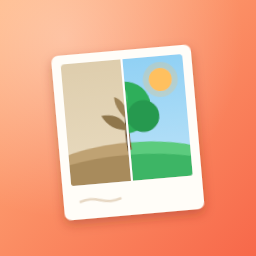

KeepIt2 · 킵잇투시행일: 2026년 11월 26일
KeepIt2(킵잇투, 이하 "앱")는 같은 자리에서 다시 찍은 사진을 모아 그때와 지금을 비교하는 사진 앱입니다. 앱은 회원가입이 없고, 서버가 없습니다. 찍은 사진과 기록은 모두 이용자의 휴대폰 안에만 저장되며, 운영자는 이를 볼 수 없습니다. 광고를 보여주거나 개인정보를 팔지 않습니다.
아래 정보는 앱 안에만 저장되며, 앱이나 운영자의 서버로 보내지 않습니다.
| 정보 | 이유 | 보관 |
|---|---|---|
| 프로젝트 (이름, 사진 비율, 촬영 주기, 알림 시각) | 사진을 주제별로 모으고 찍을 날 알려 주기 | 지우거나 앱을 지울 때까지 |
| 찍었거나 불러온 사진과 그 썸네일 | 지난 사진을 겹쳐 보며 찍기, 비교, 타임랩스 만들기 | 지우거나 앱을 지울 때까지 |
| 사진마다 찍은 날짜, 찍을 때 기기 기울기, 앞·뒤 카메라 여부 | 날짜순 정리, 다음에 같은 각도로 찍도록 안내 | 사진을 지우거나 앱을 지울 때까지 |
| 앱 설정 (사진첩 저장 여부 등) | 설정 유지 | 앱을 지울 때까지 |
백업 파일 만들기를 누르면 모든 프로젝트와 사진을 ZIP 파일 하나로 휴대폰 안에서 만들고, 이용자가 고른 곳(파일 앱, 클라우드 드라이브, 메신저 등)에 저장하거나 보냅니다. 타임랩스 영상과 비교 이미지도 이용자가 공유를 누를 때만 고른 앱으로 전달됩니다. 이렇게 내보낸 파일은 받은 곳의 방침에 따라 보관되며, 앱은 그 사본을 관리하지 않습니다.
평생 이용권을 사거나 구매를 복원할 때만 아래 업체가 구매를 처리합니다. 사진과 프로젝트는 보내지 않습니다.
| 업체 | 하는 일 | 다루는 정보 |
|---|---|---|
| Apple App Store / Google Play | 결제 | 스토어 계정과 결제 정보 (각 스토어의 방침을 따름) |
| RevenueCat (미국) | 구매 확인과 복원 | 앱이 만든 익명 사용자 id, 구매 기록, 기기 종류·OS·앱 버전 |
RevenueCat은 국외(미국)에 있으며, 구매를 확인하는 데 필요한 최소한의 정보만 전달됩니다. 이름·이메일·전화번호는 앱이 받지 않습니다.
앱에는 계정이 없어 운영자가 이용자의 정보를 찾거나 지워 드릴 수 없습니다. 모든 정보는 이용자가 휴대폰에서 직접 관리합니다.
이용자는 언제든 자신의 정보를 확인·수정·삭제할 수 있으며, 앱에서 직접 할 수 있습니다. 구매 정보에 관한 요청은 아래 연락처로 보내 주세요.
앱은 만 14세 미만 아동을 대상으로 하지 않으며, 아동의 개인정보를 따로 모으지 않습니다. 보호자가 아이의 성장을 찍는 경우에도 사진은 보호자의 휴대폰 안에만 저장됩니다.
DoIt2 팀
이메일:
doit2team@gmail.com
이 방침이 바뀌면 이 페이지에 알려드리며, 시행일을 함께 적습니다. 서버에 정보를 보내는 기능이 생기면 그 전에 이 방침을 고칩니다.